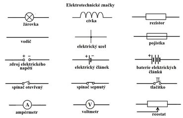

Elektřina je fyzikální jev způsobený pohybem elektronů v materiálu.
Základem jsou elektrický proud, napětí a odpor, které popisují
chování elektrického obvodu. Elektřina se využívá v každodenním
životě od osvětlení po elektroniku. Vzniká například v elektrárnách
pomocí generátorů.
*patří sem veličiny jako
elektrické napětí,
elektrický proud a
elektrický odpor
Elektrický obvod

Značky elektrického obvodu
Zdroj:
fyzika72.webnode.sk; oříznuto
- aby procházel proud, musí
- obsahovat zdroj napětí
- být všude spojený
- kreslí se poskládáním značek do obrázku
Rezistor
- součástka ke snižení el. proudu
- klade proudu odpor
- drátek je ze slitin (např. konstantan)
- drátek namotaný ve válec
Reostad
- rezistor, který mění odpor plynule
- na stlumení jasu, hlasitosti, teploty...
Elektrické vodiče a izolanty
vodiče - většina kovů, tuha
izolanty - plast, dřevo, sklo, porcelán
Zdroje elektrického napětí
- zásuvka
- baterie
- podle napětí (1,5 V)
- podle výdrže
- jednorázové
- dobíjecí (akumulátory)
{kind=link}